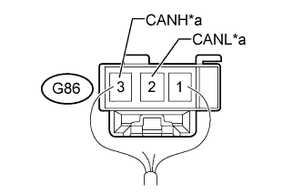
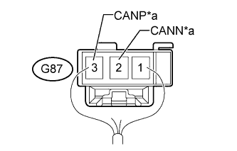
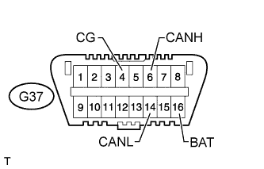
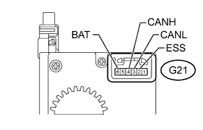

CAN COMMUNICATION SYSTEM > TERMINALS OF ECU |
| DISCONNECT CABLE FROM NEGATIVE BATTERY TERMINAL |
Disconnect the cable from the negative (-) battery terminal before measuring the resistances of the main wire and the branch wire.
| Condition | Waiting Time |
| Vehicle enrolled in G-BOOK system | 6 minutes |
| Vehicle not enrolled in G-BOOK system | 1 minute |
| JUNCTION CONNECTOR |
NO. 1 JUNCTION CONNECTOR
G82 No. 1 junction connector
| *a | for No. 2 Junction Connector | *b | for Four Wheel Drive Control ECU |
| *c | for Certification ECU | *d | for Power Management Control ECU (V1 Bus) |
| *e | for ECM (V1 Bus) | - | - |
| No. 1 Junction Connector | Wiring Color | Connect to |
| G82-1 (CANH) | GR | No. 2 junction connector |
| G82-12 (CANL) | W | |
| G82-2 (CANH) | G | Four wheel drive control ECU |
| G82-13 (CANL) | W | |
| G82-3 (CANH) | P | Certification ECU |
| G82-14 (CANL) | W | |
| G82-4 (CANH) | BR | Power management control ECU (V1 bus) |
| G82-15 (CANL) | W | |
| G82-6 (CANH) | R | ECM (V1 bus) |
| G82-17 (CANL) | W |
G83 No. 1 junction connector
| *a | for No. 3 Junction Connector (V2 Bus) | *b | for Power Management Control ECU (V2 Bus) |
| *c | for Parking Assist ECU (w/ LEXUS Parking Assist-sensor System [w/ Parking Assist System and/or Side Monitor System]) for Clearance Warning ECU Assembly (w/ LEXUS Parking Assist-sensor System [w/o Parking Assist System and/or Side Monitor System]) | *d | for Driving Support ECU Assembly (w/ Pre-crash Safety System) (V2 Bus) |
| *e | for ECM (Power Management Bus) | *f | for Air Conditioning Amplifier Assembly |
| *g | for Power Management Control ECU (Power Management Bus) | - | - |
| No. 1 Junction Connector | Wiring Color | Connect to |
| G83-1 (CANH) | P | No. 3 junction connector (V2 bus) |
| G83-12 (CANL) | W | |
| G83-2 (CANH) | V | Power management control ECU (V2 bus) |
| G83-13 (CANL) | W | |
| G83-3 (CANH) | B | Parking assist ECU*1 or clearance warning ECU assembly*2 |
| G83-14 (CANL) | W | |
| G83-4 (CANH) | G | Driving support ECU assembly*3 (V2 bus) |
| G83-15 (CANL) | W | |
| G83-9 (CANH) | BR | ECM (power management bus) |
| G83-20 (CANL) | GR | |
| G83-10 (CANH) | BR | Air conditioning amplifier assembly |
| G83-21 (CANL) | Y | |
| G83-11 (CANH) | BR | Power management control ECU (power management bus) (V2 Bus) |
| G83-22 (CANL) | W |
G84 No. 1 junction connector
| *a | for Outer Mirror Control ECU Assembly RH | *b | for Driving Support Switch Control ECU |
| *c | for No. 6 Junction Connector | *d | for No. 3 Junction Connector (MS Bus) |
| No. 1 Junction Connector | Wiring Color | Connect to |
| G84-1 (CANH) | G | Outer mirror control ECU assembly RH |
| G84-12 (CANL) | W | |
| G84-2 (CANH) | R | Driving support switch control ECU |
| G84-13 (CANL) | W | |
| G84-3 (CANH) | LG | No. 6 junction connector |
| G84-14 (CANL) | W | |
| G84-4 (CANH) | V | No. 3 junction connector (MS bus) |
| G84-15 (CANL) | W |
NO. 2 JUNCTION CONNECTOR
| *a | for No. 1 Junction Connector (V1 Bus) | *b | for Display and Navigation Module Display (w/ Navigation System) |
| *c | for Spiral with Sensor Cable Sub-assembly | *d | for Yaw Rate Sensor Assembly |
| *e | for Center Airbag Sensor Assembly | *f | for No. 3 Junction Connector (V1 Bus) |
| No. 2 Junction Connector | Wiring Color | Connect to |
| G85-1 (CANH) | GR | No. 1 junction connector (V1 bus) |
| G85-12 (CANL) | W | |
| G85-2 (CANH) | P | Display and navigation module display* |
| G85-13 (CANL) | W | |
| G85-3 (CANH) | G | Spiral with sensor cable sub-assembly |
| G85-14 (CANL) | W | |
| G85-4 (CANH) | R | Yaw rate sensor assembly |
| G85-15 (CANL) | W | |
| G85-5 (CANH) | Y | Center airbag sensor assembly |
| G85-16 (CANL) | W | |
| G85-6 (CANH) | LG | No. 3 junction connector (V1 bus) |
| G85-17 (CANL) | W |
NO. 3 JUNCTION CONNECTOR
G79 No. 3 junction connector
| *a | for No. 2 Junction Connector | *b | for Main Body ECU (Multiplex Network Body ECU) (V1 Bus) |
| *c | for DLC3 | *d | for No. 4 Junction Connector (V1 Bus) |
| No. 3 Junction Connector | Wiring Color | Connect to |
| G79-1 (CANH) | LG | No. 2 junction connector |
| G79-12 (CANL) | W | |
| G79-3 (CANH) | L | Main body ECU (multiplex network body ECU) (V1 bus) |
| G79-14 (CANL) | W | |
| G79-5 (CANH) | R | DLC3 |
| G79-16 (CANL) | W | |
| G79-6 (CANH) | B | No. 4 junction connector (V1 Bus) |
| G79-17 (CANL) | W |
G80 No. 3 junction connector
| *a | for No. 1 Junction Connector (V2 Bus) | *b | for No. 4 Junction Connector (V2 Bus) |
| *c | for Stabilizer Control ECU | *d | for Seat Belt Control ECU (w/ Pre-crash Safety System) |
| *e | for Driving Support ECU Assembly (w/ Pre-crash Safety System) (Sensor Bus) | *f | for Millimeter Wave Radar Sensor Assembly (w/ Pre-crash Safety System) |
| No. 3 Junction Connector | Wiring Color | Connect to |
| G80-1 (CANH) | P | No. 1 junction connector (V2 bus) |
| G80-12 (CANL) | W | |
| G80-3 (CANH) | B | No. 4 junction connector (V2 Bus) |
| G80-14 (CANL) | W | |
| G80-5 (CANH) | V | Stabilizer control ECU |
| G80-16 (CANL) | W | |
| G80-6 (CANH) | L | Seat belt control ECU* |
| G80-17 (CANL) | W | |
| G80-9 (CANH) | L | Driving support ECU assembly (sensor bus)* |
| G80-20 (CANL) | W | |
| G80-11 (CANH) | LG | Millimeter wave radar sensor assembly* |
| G80-22 (CANL) | W |
G81 No. 3 junction connector
| *a | for Outer Mirror Control ECU Assembly LH | *b | for Front Power Seat Switch LH |
| *c | for Multiplex Tilt and Telescopic ECU | *d | for Main Body ECU (Multiplex Network Body ECU) (MS Bus) |
| *e | for No. 1 Junction Connector (MS Bus) | - | - |
| No. 3 Junction Connector | Wiring Color | Connect to |
| G81-1 (CANH) | B | Outer mirror control ECU assembly LH |
| G81-12 (CANL) | W | |
| G81-2 (CANH) | L | Front power seat switch LH |
| G81-13 (CANL) | W | |
| G81-3 (CANH) | GR | Multiplex tilt and telescopic ECU |
| G81-14 (CANL) | W | |
| G81-4 (CANH) | P | Main body ECU (multiplex network body ECU) (MS bus) |
| G81-15 (CANL) | W | |
| G81-5 (CANH) | V | No. 1 junction connector (MS bus) |
| G81-16 (CANL) | W |
NO. 4 JUNCTION CONNECTOR
| *a | for No. 5 Junction Connector | *b | for No. 3 Junction Connector (V2 Bus) |
| *c | for Suspension Control ECU | *d | for Headlight Swivel ECU Assembly (AFS ECU) |
| *e | for No. 3 Junction Connector (V1 Bus) | *f | for Combination Meter Assembly |
| *g | for Master Cylinder Solenoid (Skid Control ECU) | - | - |
| No. 4 Junction Connector | Wiring Color | Connect to |
| A59-1 (CANH) | LG | No. 5 junction connector |
| A59-12 (CANL) | W | |
| A59-2 (CANH) | B | No. 3 junction connector (V2 bus) |
| A59-13 (CANL) | W | |
| A59-3 (CANH) | GR | Suspension control ECU |
| A59-14 (CANL) | W | |
| A59-4 (CANH) | V | Headlight swivel ECU assembly (AFS ECU) |
| A59-15 (CANL) | W | |
| A59-9 (CANH) | R | No. 3 junction connector (V1 bus) |
| A59-20 (CANL) | W | |
| A59-10 (CANH) | LG | Combination meter assembly |
| A59-21 (CANL) | W | |
| A59-11 (CANH) | B | Master cylinder solenoid (skid control ECU) |
| A59-22 (CANL) | W |
|  |
NO. 5 JUNCTION CONNECTOR
| *a | for No. 4 Junction Connector (V2 Bus) |
| No. 5 Junction Connector | Wiring Color | Connect to |
| G86-2 (CANL) | W | No. 4 junction connector (V2 bus) |
| G86-3 (CANH) | LG |
|  |
NO. 6 JUNCTION CONNECTOR
| *a | for No. 1 Junction Connector (MS Bus) |
| No. 6 Junction Connector | Wiring Color | Connect to |
| G87-2 (CANN) | W | No. 1 junction connector (MS bus) |
| G87-3 (CANP) | LG |
| CHECK DLC3 |
Disconnect the cable from the negative (-) battery terminal before measuring the resistances of the main wire and the branch wire.
| Condition | Waiting Time |
| Vehicle enrolled in G-BOOK system | 6 minutes |
| Vehicle not enrolled in G-BOOK system | 1 minute |
|  |
Measure the resistance according to the value(s) in the table below.
| Terminal No. (Symbol) | Wiring Color | Switch Condition | Specified Condition |
| G37-6 (CANH) - G37-14 (CANL) | R - W | Engine switch off | 54 to 69 Ω |
| G37-6 (CANH) - G37-4 (CG) | R - W-B | Engine switch off | 200 Ω or higher |
| G37-14 (CANL) - G37-4 (CG) | W - W-B | Engine switch off | 200 Ω or higher |
| G37-6 (CANH) - G37-16 (BAT) | R - GR | Engine switch off | 6 kΩ or higher |
| G37-14 (CANL) - G37-16 (BAT) | W - GR | Engine switch off | 6 kΩ or higher |
| CHECK ECM |
| *A | for V1 Bus | *B | for Power Management Bus |
Disconnect the C30, G44 and G45 ECM connectors.
Measure the resistance according to the value(s) in the table below.
| Terminal No. (Symbol) | Wiring Color | Switch Condition | Specified Condition |
| G45-32 (CANH) - G45-31 (CANL) | R - W | Engine switch off | 108 to 132 Ω |
| G45-32 (CANH) - C30-12 (E1) | R - BR | Engine switch off | 200 Ω or higher |
| G45-31 (CANL) - C30-12 (E1) | W - BR | Engine switch off | 200 Ω or higher |
| G45-32 (CANH) - G44-24 (BATT) | R - L | Engine switch off | 6 kΩ or higher |
| G45-31 (CANL) - G44-24 (BATT) | W - L | Engine switch off | 6 kΩ or higher |
| Terminal No. (Symbol) | Wiring Color | Switch Condition | Specified Condition |
| G45-34 (CANP) - G45-33 (CANN) | BR - GR | Engine switch off | 108 to 132 Ω |
| G45-34 (CANP) - C30-12 (E1) | BR - BR | Engine switch off | 200 Ω or higher |
| G45-33 (CANN) - C30-12 (E1) | GR - BR | Engine switch off | 200 Ω or higher |
| G45-34 (CANP) - G44-24 (BATT) | BR - L | Engine switch off | 6 kΩ or higher |
| G45-33 (CANN) - G44-24 (BATT) | GR - L | Engine switch off | 6 kΩ or higher |
| CHECK DRIVER SIDE JUNCTION BLOCK ASSEMBLY AND MAIN BODY ECU (MULTIPLEX NETWORK BODY ECU) |
| *A | for V1 Bus | *B | for MS Bus |
Remove the main body ECU (multiplex network body ECU) (Click here).
Measure the resistance according to the value(s) in the table below.
| Terminal No. (Symbol) | Wiring Color | Switch Condition | Specified Condition |
| G47-14 (CANH) - G47-13 (CANL) | L - W | Engine switch off | 54 to 69 Ω |
| G47-14 (CANH) - A-11 (GND1) | L - None | Engine switch off | 200 Ω or higher |
| G47-13 (CANL) - A-11 (GND1) | W - None | Engine switch off | 200 Ω or higher |
| G47-14 (CANH) - A-30 (BECU) | L - None | Engine switch off | 6 kΩ or higher |
| G47-13 (CANL) - A-30 (BECU) | W - None | Engine switch off | 6 kΩ or higher |
| Terminal No. (Symbol) | Wiring Color | Switch Condition | Specified Condition |
| G46-9 (CANP) - G46-10 (CANN) | P - W | Engine switch off | 108 to 132 Ω |
| G46-9 (CANP) - A-11 (GND1) | P - None | Engine switch off | 200 Ω or higher |
| G46-10 (CANN) - A-11 (GND1) | W - None | Engine switch off | 200 Ω or higher |
| G46-9 (CANP) - A-30 (BECU) | P - None | Engine switch off | 6 kΩ or higher |
| G46-10 (CANN) - A-30 (BECU) | W - None | Engine switch off | 6 kΩ or higher |
| CHECK COMBINATION METER ASSEMBLY |
Disconnect the G3 combination meter assembly connector.
Measure the resistance according to the value(s) in the table below.
| Terminal No. (Symbol) | Wiring Color | Switch Condition | Specified Condition |
| G3-40 (CANH) - G3-39 (CANL) | LG - W | Engine switch off | 108 to 132 Ω |
| G3-40 (CANH) - G3-1 (EP) | LG - W-B | Engine switch off | 200 Ω or higher |
| G3-39 (CANL) - G3-1 (EP) | W - W-B | Engine switch off | 200 Ω or higher |
| G3-40 (CANH) - G3-25 (B) | LG - L | Engine switch off | 6 kΩ or higher |
| G3-39 (CANL) - G3-25 (B) | W - L | Engine switch off | 6 kΩ or higher |
| CHECK CENTER AIRBAG SENSOR ASSEMBLY |
Disconnect the G1 center airbag sensor assembly connector.
Measure the resistance according to the value(s) in the table below.
| Terminal No. (Symbol) | Wiring Color | Switch Condition | Specified Condition |
| G1-13 (CANH) - G1-22 (CANL) | Y - W | Engine switch off | 54 to 69 Ω |
| G1-13 (CANH) - G1-25 (E1) | Y - W-B | Engine switch off | 200 Ω or higher |
| G1-22 (CANL) - G1-25 (E1) | W - W-B | Engine switch off | 200 Ω or higher |
| G1-13 (CANH) - G37-16 (BAT) | Y - GR | Engine switch off | 6 kΩ or higher |
| G1-22 (CANL) - G37-16 (BAT) | W - GR | Engine switch off | 6 kΩ or higher |
| CHECK MASTER CYLINDER SOLENOID (SKID CONTROL ECU) |
Disconnect the A7 master cylinder solenoid (skid control ECU) connector.
Measure the resistance according to the value(s) in the table below.
| Terminal No. (Symbol) | Wiring Color | Switch Condition | Specified Condition |
| A7-11 (CANH) - A7-25 (CANL) | B - W | Engine switch off | 54 to 69 Ω |
| A7-11 (CANH) - A7-1 (GND1) | B - W-B | Engine switch off | 200 Ω or higher |
| A7-25 (CANL) - A7-1 (GND1) | W - W-B | Engine switch off | 200 Ω or higher |
| A7-11 (CANH) - A7-2 (+BM1) | B - B | Engine switch off | 6 kΩ or higher |
| A7-25 (CANL) - A7-2 (+BM1) | W - B | Engine switch off | 6 kΩ or higher |
| CHECK SPIRAL WITH SENSOR CABLE SUB-ASSEMBLY |
|  |
Disconnect the G21 spiral with sensor cable sub-assembly connector.
Measure the resistance according to the value(s) in the table below.
| Terminal No. (Symbol) | Wiring Color | Switch Condition | Specified Condition |
| G21-4 (CANH) - G21-3 (CANL) | G - W | Engine switch off | 54 to 69 Ω |
| G21-4 (CANH) - G21-2 (ESS) | G - W-B | Engine switch off | 200 Ω or higher |
| G21-3 (CANL) - G21-2 (ESS) | W - W-B | Engine switch off | 200 Ω or higher |
| G21-4 (CANH) - G21-6 (BAT) | G - L | Engine switch off | 6 kΩ or higher |
| G21-3 (CANL) - G21-6 (BAT) | W - L | Engine switch off | 6 kΩ or higher |
| CHECK YAW RATE SENSOR ASSEMBLY |
Disconnect the G40 yaw rate sensor assembly connector.
Measure the resistance according to the value(s) in the table below.
| Terminal No. (Symbol) | Wiring Color | Switch Condition | Specified Condition |
| G40-3 (CANH) - G40-2 (CANL) | R - W | Engine switch off | 54 to 69 Ω |
| G40-3 (CANH) - G40-1 (GND) | R - W-B | Engine switch off | 200 Ω or higher |
| G40-2 (CANL) - G40-1 (GND) | W - W-B | Engine switch off | 200 Ω or higher |
| G40-3 (CANH) - G37-16 (BAT) | R - GR | Engine switch off | 6 kΩ or higher |
| G40-2 (CANL) - G37-16 (BAT) | W - GR | Engine switch off | 6 kΩ or higher |
| CHECK CERTIFICATION ECU |
Disconnect the G26 certification ECU connector.
Measure the resistance according to the value(s) in the table below.
| Terminal No. (Symbol) | Wiring Color | Switch Condition | Specified Condition |
| G26-9 (CANH) - G26-10 (CANL) | P - W | Engine switch off | 54 to 69 Ω |
| G26-9 (CANH) - G26-15 (E) | P - W-B | Engine switch off | 200 Ω or higher |
| G26-10 (CANL) - G26-15 (E) | W - W-B | Engine switch off | 200 Ω or higher |
| G26-9 (CANH) - G26-1 (+B) | P - V | Engine switch off | 6 kΩ or higher |
| G26-10 (CANL) - G26-1 (+B) | W - V | Engine switch off | 6 kΩ or higher |
| CHECK POWER MANAGEMENT CONTROL ECU |
| *A | for V1 Bus | *B | for V2 Bus |
| *C | for Power Management Bus | - | - |
Disconnect the G39 power management control ECU connector.
Measure the resistance according to the value(s) in the table below.
| Terminal No. (Symbol) | Wiring Color | Switch Condition | Specified Condition |
| G39-14 (CA1H) - G39-13 (CA1L) | BR - W | Engine switch off | 54 to 69 Ω |
| G39-14 (CA1H) - G39-6 (GND) | BR - W-B | Engine switch off | 200 Ω or higher |
| G39-13 (CA1L) - G39-6 (GND) | W - W-B | Engine switch off | 200 Ω or higher |
| G39-14 (CA1H) - G39-1 (AM22) | BR - B | Engine switch off | 6 kΩ or higher |
| G39-13 (CA1L) - G39-1 (AM22) | W - B | Engine switch off | 6 kΩ or higher |
| Terminal No. (Symbol) | Wiring Color | Switch Condition | Specified Condition |
| G39-26 (CA2H) - G39-25 (CA2L) | V - W | Engine switch off | 108 to 132 Ω |
| G39-26 (CA2H) - G39-6 (GND) | V - W-B | Engine switch off | 200 Ω or higher |
| G39-25 (CA2L) - G39-6 (GND) | W - W-B | Engine switch off | 200 Ω or higher |
| G39-26 (CA2H) - G39-1 (AM22) | V - B | Engine switch off | 6 kΩ or higher |
| G39-25 (CA2L) - G39-1 (AM22) | W - B | Engine switch off | 6 kΩ or higher |
| Terminal No. (Symbol) | Wiring Color | Switch Condition | Specified Condition |
| G39-12 (CA3P) - G39-11 (CA3N) | BR - W | Engine switch off | 108 to 132 Ω |
| G39-12 (CA3P) - G39-6 (GND) | BR - W-B | Engine switch off | 200 Ω or higher |
| G39-11 (CA3N) - G39-6 (GND) | W - W-B | Engine switch off | 200 Ω or higher |
| G39-12 (CA3P) - G39-1 (AM22) | BR - B | Engine switch off | 6 kΩ or higher |
| G39-11 (CA3N) - G39-1 (AM22) | W - B | Engine switch off | 6 kΩ or higher |
| CHECK DISPLAY AND NAVIGATION MODULE DISPLAY (w/ Navigation System) |
Disconnect the H4 display and navigation module display connector.
Measure the resistance according to the value(s) in the table below.
| Terminal No. (Symbol) | Wiring Color | Switch Condition | Specified Condition |
| H4-21 (CANH) - H4-22 (CANL) | W - P | Engine switch off | 54 to 69 Ω |
| H4-21 (CANH) - H4-10 (GND1) | W - BR | Engine switch off | 200 Ω or higher |
| H4-22 (CANL) - H4-10 (GND1) | P - BR | Engine switch off | 200 Ω or higher |
| H4-21 (CANH) - H4-1 (+B1) | W - SB | Engine switch off | 6 kΩ or higher |
| H4-22 (CANL) - H4-1 (+B1) | P - SB | Engine switch off | 6 kΩ or higher |
| CHECK FOUR WHEEL DRIVE CONTROL ECU |
Disconnect the G41 and G42 four wheel drive control ECU connectors.
Measure the resistance according to the value(s) in the table below.
| Terminal No. (Symbol) | Wiring Color | Switch Condition | Specified Condition |
| G41-19 (CANH) - G41-20 (CANL) | G - W | Engine switch off | 54 to 69 Ω |
| G41-19 (CANH) - G42-4 (GND) | G - W-B | Engine switch off | 200 Ω or higher |
| G41-20 (CANL) - G42-4 (GND) | W - W-B | Engine switch off | 200 Ω or higher |
| G41-19 (CANH) - G37-16 (BAT) | G - GR | Engine switch off | 6 kΩ or higher |
| G41-20 (CANL) - G37-16 (BAT) | W - GR | Engine switch off | 6 kΩ or higher |
| CHECK SUSPENSION CONTROL ECU |
Disconnect the A40 suspension control ECU connector.
Measure the resistance according to the value(s) in the table below.
| Terminal No. (Symbol) | Wiring Color | Switch Condition | Specified Condition |
| A40-7 (CANH) - A40-8 (CANL) | GR - W | Engine switch off | 54 to 69 Ω |
| A40-7 (CANH) - A40-5 (GND) | GR - W-B | Engine switch off | 200 Ω or higher |
| A40-8 (CANL) - A40-5 (GND) | W - W-B | Engine switch off | 200 Ω or higher |
| A40-7 (CANH) - A40-3 (B) | GR - GR | Engine switch off | 6 kΩ or higher |
| A40-8 (CANL) - A40-3 (B) | W - GR | Engine switch off | 6 kΩ or higher |
| CHECK STABILIZER CONTROL ECU |
Disconnect the G57 stabilizer control ECU connector.
Measure the resistance according to the value(s) in the table below.
| Terminal No. (Symbol) | Wiring Color | Switch Condition | Specified Condition |
| G57-29 (CANH) - G57-28 (CANL) | V - W | Engine switch off | 54 to 69 Ω |
| G57-29 (CANH) - G57-22 (GND) | V - W-B | Engine switch off | 200 Ω or higher |
| G57-28 (CANL) - G57-22 (GND) | W - W-B | Engine switch off | 200 Ω or higher |
| G57-29 (CANH) - G37-16 (BAT) | V - GR | Engine switch off | 6 kΩ or higher |
| G57-28 (CANL) - G37-16 (BAT) | W - GR | Engine switch off | 6 kΩ or higher |
| CHECK SEAT BELT CONTROL ECU (w/ Pre-crash Safety System) |
Disconnect the G34 and G35 seat belt control ECU connectors.
Measure the resistance according to the value(s) in the table below.
| Terminal No. (Symbol) | Wiring Color | Switch Condition | Specified Condition |
| G35-1 (CANH) - G35-2 (CANL) | L - W | Engine switch off | 54 to 69 Ω |
| G35-1 (CANH) - G34-8 (PGND) | L - W-B | Engine switch off | 200 Ω or higher |
| G35-2 (CANL) - G34-8 (PGND) | W - W-B | Engine switch off | 200 Ω or higher |
| G35-1 (CANH) - G34-7 (+B) | L - W | Engine switch off | 6 kΩ or higher |
| G35-2 (CANL) - G34-7 (+B) | W - W | Engine switch off | 6 kΩ or higher |
| CHECK DRIVING SUPPORT ECU ASSEMBLY (w/ Pre-crash Safety System) |
| *A | for V2 Bus | *B | for Sensor Bus |
Disconnect the G43 driving support ECU assembly connector.
Measure the resistance according to the value(s) in the table below.
| Terminal No. (Symbol) | Wiring Color | Switch Condition | Specified Condition |
| G43-39 (CA2H) - G43-17 (CA2L) | G - W | Engine switch off | 54 to 69 Ω |
| G43-39 (CA2H) - G43-25 (GND) | G - BR | Engine switch off | 200 Ω or higher |
| G43-17 (CA2L) - G43-25 (GND) | W - BR | Engine switch off | 200 Ω or higher |
| G43-39 (CA2H) - G37-16 (BAT) | G - GR | Engine switch off | 6 kΩ or higher |
| G43-17 (CA2L) - G37-16 (BAT) | W - GR | Engine switch off | 6 kΩ or higher |
| Terminal No. (Symbol) | Wiring Color | Switch Condition | Specified Condition |
| G43-40 (CA1P) - G43-18 (CA1N) | L - W | Engine switch off | 108 to 132 Ω |
| G43-40 (CA1P) - G43-25 (GND) | L - BR | Engine switch off | 200 Ω or higher |
| G43-18 (CA1N) - G43-25 (GND) | W - BR | Engine switch off | 200 Ω or higher |
| G43-40 (CA1P) - G37-16 (BAT) | L - GR | Engine switch off | 6 kΩ or higher |
| G43-18 (CA1N) - G37-16 (BAT) | W - GR | Engine switch off | 6 kΩ or higher |
| CHECK PARKING ASSIST ECU (w/ LEXUS Parking Assist-sensor System [w/ Parking Assist System and/or Side Monitor System]) |
Disconnect the I3 parking assist ECU connector.
Measure the resistance according to the value(s) in the table below.
| Terminal No. (Symbol) | Wiring Color | Switch Condition | Specified Condition |
| I3-22 (CANH) - I3-21 (CANL) | B - W | Engine switch off | 54 to 69 Ω |
| I3-22 (CANH) - I3-3 (GND1) | B - W-B | Engine switch off | 200 Ω or higher |
| I3-21 (CANL) - I3-3 (GND1) | W - W-B | Engine switch off | 200 Ω or higher |
| I3-22 (CANH) - I3-1 (+B) | B - L | Engine switch off | 6 kΩ or higher |
| I3-21 (CANL) - I3-1 (+B) | W - L | Engine switch off | 6 kΩ or higher |
| CHECK CLEARANCE WARNING ECU ASSEMBLY (w/ LEXUS Parking Assist-sensor System [w/o Parking Assist System and/or Side Monitor System]) |
Disconnect the I1 clearance warning ECU assembly connector.
Measure the resistance according to the value(s) in the table below.
| Terminal No. (Symbol) | Wiring Color | Switch Condition | Specified Condition |
| I1-3 (R1) - I1-5 (R2) | B - W | Engine switch off | 54 to 69 Ω |
| I1-3 (R1) - I1-17 (E) | B - W-B | Engine switch off | 200 Ω or higher |
| I1-5 (R2) - I1-17 (E) | W - W-B | Engine switch off | 200 Ω or higher |
| I1-3 (R1) - G37-16 (BAT) | B - GR | Engine switch off | 6 kΩ or higher |
| I1-5 (R2) - G37-16 (BAT) | W - GR | Engine switch off | 6 kΩ or higher |
| CHECK HEADLIGHT SWIVEL ECU ASSEMBLY (AFS ECU) |
Disconnect the A46 headlight swivel ECU assembly (AFS ECU) connector.
Measure the resistance according to the value(s) in the table below.
| Terminal No. (Symbol) | Wiring Color | Switch Condition | Specified Condition |
| A46-12 (CANH) - A46-13 (CANL) | V - W | Engine switch off | 54 to 69 Ω |
| A46-12 (CANH) - A46-22 (E1) | V - W-B | Engine switch off | 200 Ω or higher |
| A46-13 (CANL) - A46-22 (E1) | W - W-B | Engine switch off | 200 Ω or higher |
| A46-12 (CANH) - G37-16 (BAT) | V - GR | Engine switch off | 6 kΩ or higher |
| A46-13 (CANL) - G37-16 (BAT) | W - GR | Engine switch off | 6 kΩ or higher |
| CHECK MULTIPLEX TILT AND TELESCOPIC ECU |
Disconnect the G33 multiplex tilt and telescopic ECU connector.
Measure the resistance according to the value(s) in the table below.
| Terminal No. (Symbol) | Wiring Color | Switch Condition | Specified Condition |
| G33-5 (CANP) - G33-14 (CANN) | GR - W | Engine switch off | 54 to 69 Ω |
| G33-5 (CANP) - G33-11 (GND) | GR - W-B | Engine switch off | 200 Ω or higher |
| G33-14 (CANN) - G33-11 (GND) | W - W-B | Engine switch off | 200 Ω or higher |
| G33-5 (CANP) - G33-2 (+B) | GR - G | Engine switch off | 6 kΩ or higher |
| G33-14 (CANN) - G33-2 (+B) | W - G | Engine switch off | 6 kΩ or higher |
| CHECK FRONT POWER SEAT SWITCH LH |
Disconnect the b4 and b5 front power seat switch LH connectors.
Measure the resistance according to the value(s) in the table below.
| Terminal No. (Symbol) | Wiring Color | Switch Condition | Specified Condition |
| b5-8 (CANP) - b5-7 (CANN) | L - W | Engine switch off | 54 to 69 Ω |
| b5-8 (CANP) - b4-2 (GND1) | L - W-B | Engine switch off | 200 Ω or higher |
| b5-7 (CANN) - b4-2 (GND1) | W - W-B | Engine switch off | 200 Ω or higher |
| b5-8 (CANP) - b4-7 (+B1) | L - W | Engine switch off | 6 kΩ or higher |
| b5-7 (CANN) - b4-7 (+B1) | W - W | Engine switch off | 6 kΩ or higher |
| CHECK DRIVING SUPPORT SWITCH CONTROL ECU |
Disconnect the G60 driving support switch control ECU connector.
Measure the resistance according to the value(s) in the table below.
| Terminal No. (Symbol) | Wiring Color | Switch Condition | Specified Condition |
| G60-9 (CANP) - G60-10 (CANN) | R - W | Engine switch off | 54 to 69 Ω |
| G60-9 (CANP) - G60-16 (GND) | R - W-B | Engine switch off | 200 Ω or higher |
| G60-10 (CANN) - G60-16 (GND) | W - W-B | Engine switch off | 200 Ω or higher |
| G60-9 (CANP) - G60-6 (+B) | R - L | Engine switch off | 6 kΩ or higher |
| G60-10 (CANN) - G60-6 (+B) | W - L | Engine switch off | 6 kΩ or higher |
| CHECK OUTER MIRROR CONTROL ECU ASSEMBLY RH |
Disconnect the J8 outer mirror control ECU assembly RH connector.
Measure the resistance according to the value(s) in the table below.
| Terminal No. (Symbol) | Wiring Color | Switch Condition | Specified Condition |
| J8-9 (CANP) - J8-8 (CANN) | G - W | Engine switch off | 54 to 69 Ω |
| J8-9 (CANP) - J8-7 (GND) | G - W-B | Engine switch off | 200 Ω or higher |
| J8-8 (CANN) - J8-7 (GND) | W - W-B | Engine switch off | 200 Ω or higher |
| J8-9 (CANP) - J8-6 (CPUB) | G - L | Engine switch off | 6 kΩ or higher |
| J8-8 (CANN) - J8-6 (CPUB) | W - L | Engine switch off | 6 kΩ or higher |
| CHECK OUTER MIRROR CONTROL ECU ASSEMBLY LH |

Disconnect the K8 outer mirror control ECU assembly LH connector.
Measure the resistance according to the value(s) in the table below.
| Terminal No. (Symbol) | Wiring Color | Switch Condition | Specified Condition |
| K8-9 (CANP) - K8-8 (CANN) | B - W | Engine switch off | 54 to 69 Ω |
| K8-9 (CANP) - K8-7 (GND) | B - W-B | Engine switch off | 200 Ω or higher |
| K8-8 (CANN) - K8-7 (GND) | W - W-B | Engine switch off | 200 Ω or higher |
| K8-9 (CANP) - K8-6 (CPUB) | B - L | Engine switch off | 6 kΩ or higher |
| K8-8 (CANN) - K8-6 (CPUB) | W - L | Engine switch off | 6 kΩ or higher |
| CHECK MILLIMETER WAVE RADAR SENSOR ASSEMBLY (w/ Pre-crash Safety System) |
Disconnect the A12 millimeter wave radar sensor assembly connector.
Measure the resistance according to the value(s) in the table below.
| Terminal No. (Symbol) | Wiring Color | Switch Condition | Specified Condition |
| A12-4 (CA1P) - A12-3 (CA1N) | LG - W | Engine switch off | 108 to 132 Ω |
| A12-4 (CA1P) - A12-2 (SGND) | LG - BR | Engine switch off | 200 Ω or higher |
| A12-3 (CA1N) - A12-2 (SGND) | W - BR | Engine switch off | 200 Ω or higher |
| A12-4 (CA1P) - G37-16 (BAT) | LG - GR | Engine switch off | 6 kΩ or higher |
| A12-3 (CA1N) - G37-16 (BAT) | W - GR | Engine switch off | 6 kΩ or higher |
| CHECK AIR CONDITIONING AMPLIFIER ASSEMBLY |
Disconnect the G13 air conditioning amplifier assembly connector.
Measure the resistance according to the value(s) in the table below.
| Terminal No. (Symbol) | Wiring Color | Condition | Specified Condition |
| G13-11 (CANH) - G13-12 (CANL) | BR - Y | Engine switch off | 54 to 69 Ω |
| G13-11 (CANH) - G13-14 (GND) | BR - W-B | Engine switch off | 200 Ω or higher |
| G13-12 (CANL) - G13-14 (GND) | Y - W-B | Engine switch off | 200 Ω or higher |
| G13-11 (CANH) - G13-21 (B) | BR - V | Engine switch off | 6 kΩ or higher |
| G13-12 (CANL) - G13-21 (B) | Y - V | Engine switch off | 6 kΩ or higher |